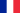

Венгер, Арсен
Венгер, АрсенОбщая информация
Родился
22 октября 1949 (67 лет) Страсбург, Франция
Гражданство
 Франция
Рост
191 см
Позиция
защитник,полузащитник
Информация о клубе
Клуб
 Арсенад (Лондон)
Арсенад (Лондон)
Должность
Главная тренер
Карьера
Молодёжные клубы
Даттленхайм 1963—1969
Мюциг 1969—1973
Клубная карьера*
Мюциг 1969—1973
Мюлуз 1973—1975
Пьерро Вобан 1975—1978
Страсбур 1978—1981
Тренерская карьера*
Страсбур (мол.) 1981—1983
Канн 1983—1984
Нанси 1984—1987
Монако 1987—1994
Нагоя Грампус Эйт 1995—1996
Арсенал (Лондон) 1996—н.в.
Арсе́н Венге́р (фр. Arsène Wenger; 22 октября 1949, Страсбург) — французский футбольный тренер немецкого происхождения, с 1996 года работающий с лондонским «Арсеналом». Считается одним из величайших тренеров в истории.
Окончил инженерный факультет Университета Страсбурга (1974), имеет степень магистра экономических наук. Владеет (помимо родного французского, а также эльзасского диалекта) пятью языками: английским, немецким, итальянским, испанским и японским.
В юности его кумиром был Раймон Копа. Дебютировал на позиции центрального защитника в любительской команде «Мютциг». Первый профессиональный контракт заключил в возрасте 24 лет с клубом 2-го дивизиона «Мюлуз», продолжил карьеру в клубе 3-го дивизиона «Пьерро Вобан» из Страсбурга. На высшем уровне выступал за «Страсбур», за 3 сезона проведя всего 12 матчей. В сезоне 1978/79 получил титул чемпиона Франции, а также вышел на поле в одном матче Кубка УЕФА.
В 1981—1994 занимался тренерской деятельностью во Франции: был тренером молодёжной команды «Страсбура» (1981—1983), помощником тренера в «Канне» (1983—1984). В 1984—1987 — главный тренер «Нанси», в 1987—1994 — главный тренер «Монако». Под руководством Венгера в сезоне 1987/88 «Монако» стал чемпионом Франции, а в 1992 — обладателем серебряных медалей, в 1989 — финалистом Кубка Франции, в 1991 — обладателем Кубка Франции, в 1992 — финалистом Кубка Обладателей Кубков. В 1995—1996 тренировал клуб «Нагоя Грампус Эйт» (Нагоя, Япония), который в сезоне 1995/1996 стал обладателем Кубка Императора и Кубка Джей-Лиги. По итогам этого сезона был признан лучшим тренером Японии.
С 1996 — главный тренер клуба «Арсенал» (Англия). При нём клуб стал чемпионом Англии (сезоны 1997/98, 2001/02, 2003/04), обладателем Кубка (1997/98, 2001/02, 2002/03, 2004/05, 2013/14, 2014/15) и Суперкубка Англии (1999, 2000, 2003, 2005, 2014, 2015), финалистом Лиги чемпионов (2006), финалистом Кубка УЕФА (2000). Возглавив «Арсенал», создал бригаду специалистов, специально занимающуюся вопросами функциональной подготовки футболистов. Каждый игрок получил индивидуальную программу тренировок и восстановительных процедур. Для каждого футболиста была также разработана специальная диета. Эти меры способствовали достижению клубом высоких результатов. Кроме того, Венгер известен своей активной и успешной селекционной политикой — при нём «Арсенал» активно приобретает молодых футболистов, которые затем становятся «звёздами» В Англии его называют «Профессор» Первый иностранный тренер в Англии (то есть тренер не из Великобритании), клуб которого выиграл национальный чемпионат. Первый иностранный тренер в Англии, кому удалось сделать «золотой дубль» — выиграть в одном сезоне и чемпионат, и Кубок. Первый иностранный тренер, признанный в этой стране «тренером года». В 2001 году отказался от поста тренера национальной сборной Франции, желая продолжить работу с «Арсеналом». При Венгере «Арсенал» окончательно вошёл в число ведущих клубов Европы, регулярно играя в плей-офф Лиги чемпионов, а в чемпионате Англии не разу не опускался ниже четвёртого места. В чемпионском сезоне 2003/2004 «Арсенал» добился уникального достижения, не проиграв ни одного матча в чемпионате (из клубов ведущих европейских чемпионатов такого результата в XXI веке смог добиться лишь «Ювентус» в 2012 году). Игра «Арсенала» при Венгере отличается ярким, открытым и атакующим футболом. Пользуется большим доверием болельщиков, в связи с чем распространена фраза «Arsene knows» («Арсен знает»). В сезоне 1998/99 стал лауреатом приза Fair play («Честная игра») за то, что отказался от победы в кубковом матче с «Шеффилдом». Тогда один из игроков «Шеффилда» получил травму, после чего его партнёр выбил мяч за боковую линию, чтобы прервать игру и позволить оказать игроку медицинскую помощь. По негласным «джентльменским правилам» игроки «Арсенала» должны были в этом случае отдать мяч противнику, но вместо этого они сохранили мяч у себя и забили гол, что не противоречило правилам. В результате «Арсенал» одержал победу со счётом 2:1 (этот гол стал решающим). Арсен Венгер выступил за переигровку матча. В новом матче «Арсенал» вновь победил с тем же счётом. Арсен Венгер, как глобальный посол компании Castrol, принял непосредственное участие в разработке системы статистики и мониторинга футбольных матчей Castrol